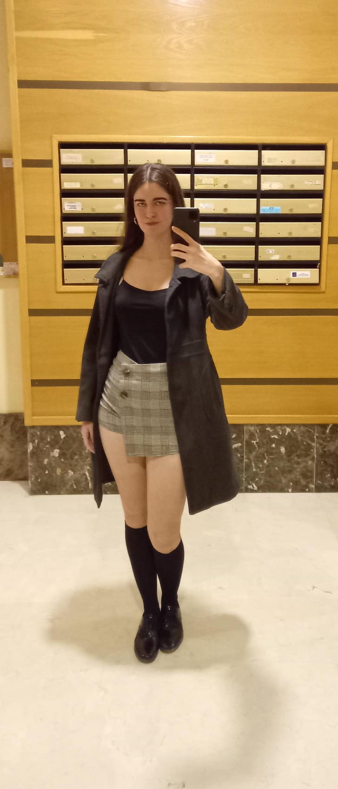
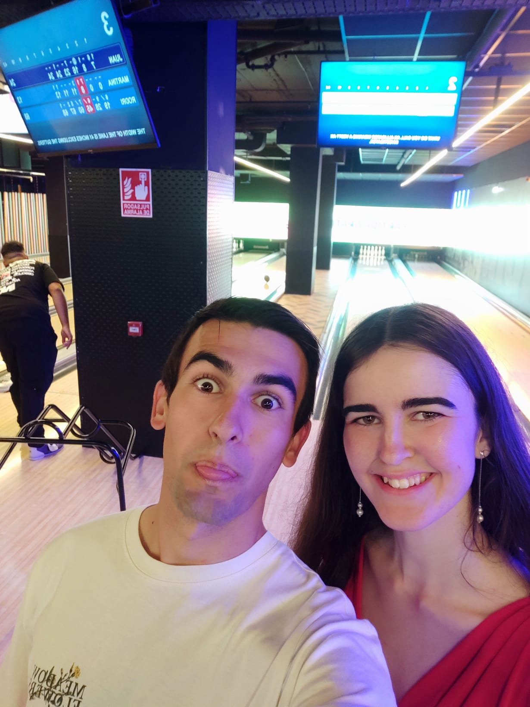

13 de Noviembre
El destino, una falda a cuadros y una cámara rota
Era una noche lluviosa. Bendito sea el amigo que me convenció para ir a esa barrilada, porque yo no suelo salir, pero el destino tenía otros planes. Te vi aparecer con esa falda a cuadros que te queda tan bonita y, en ese mismo instante, se lo dije a mi amigo: "Esa chica me ha gustado".
Yo no tenía el coraje para acercarme, la vergüenza me paralizaba. Suerte de aquella cámara de fotos estropeada que nos sirvió de excusa perfecta para romper el hielo. Jugamos al futbolín, te fuiste de repente y pensé que lo había arruinado... Estuve dándole vueltas, sintiéndome pesado, hasta que saqué un valor que no sabía que tenía para volver a hablarte.
Y entonces me dijiste que eras ciclista. En ese segundo, el mundo se cayó a mis pies. No me lo podía creer: eras hermosa y compartías mi misma pasión. Te pedí el Instagram tartamudeando de los nervios. Aquella noche volví a casa siendo el chico más feliz del mundo, contándole a todos que había encontrado a la chica de mis sueños.

18 de Noviembre
La cita más extraña (y perfecta) del mundo
Nuestra primera cita oficial. Fuimos a subir la Fuente de la Reina con las bicis. Hablamos, nos conocimos, todo fluía. Coronamos el puerto, nos hicimos la foto de la gesta y el sol se escondió.
Lo que no esperábamos era el frío polar de la bajada. Tiritábamos sin control. Desesperados, en el mirador de una venta, vi una furgoneta. ¡Era una emergencia! Les pedí refugio y terminamos tú y yo metidos en la parte de atrás de una furgoneta de frutería, sin ventanas, a oscuras, sentados en un neumático con una manta.
Congelados y sin saber a dónde íbamos, nos abrazamos. Tú apoyaste tu cabeza en mi pecho, yo me acurruqué en ti. Y entonces soltaste esa frase que jamás olvidaré: "Vaya primera cita más extraña". Sentí que el corazón se me salía del pecho. Abrazados en la oscuridad, mirando el Google Maps por si nos raptaban... reímos y entendí que, incluso en la situación más surrealista, mi lugar favorito era estar a tu lado.

23 de Noviembre
El día que empezó nuestro "Para Siempre"
Fuimos a jugar a los bolos y allí te pedí que fueras mi novia. Salimos de allí caminando de la mano, oficiales por fin. Y como nuestra historia no puede estar libre de anécdotas, apareció una ambulancia en el paso de cebra con tus conocidos de las prácticas de enfermería. ¡Qué vergüenza pasaste de que te vieran de la mano de "otro chico"! Nos reímos a carcajadas.
Pero el momento que guardo como un tesoro ocurrió después, en la parte de atrás de mi coche. Estuvimos horas hablando, contándonos nuestros sueños, metas y el futuro que nos gustaría construir juntos.
Comencé a acariciar tu pelo, tu hermosa cara, diciéndote lo bonita que eras. Te besé la mejilla y, después, nos dimos nuestro primer beso. Fue intenso, especial, mágico. Una noche de pasión donde nos dijimos muchísimo. Fue el comienzo oficial de lo más bonito que me ha pasado en la vida.
